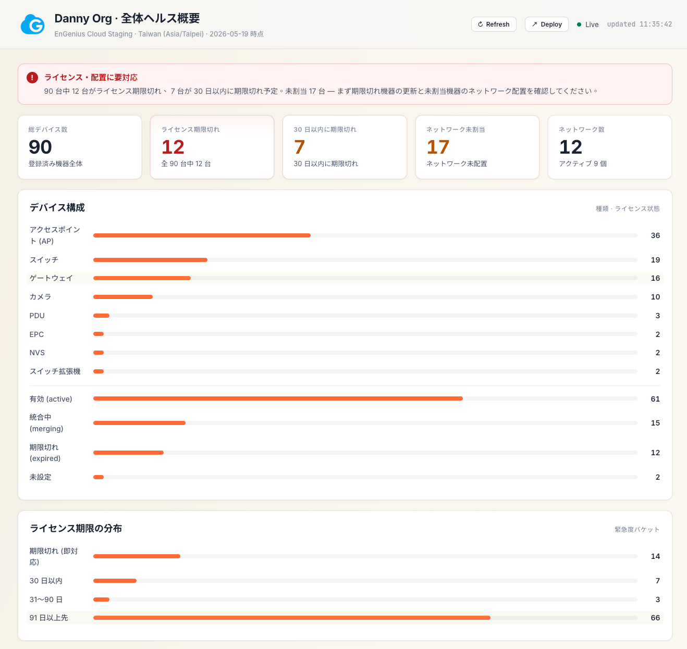
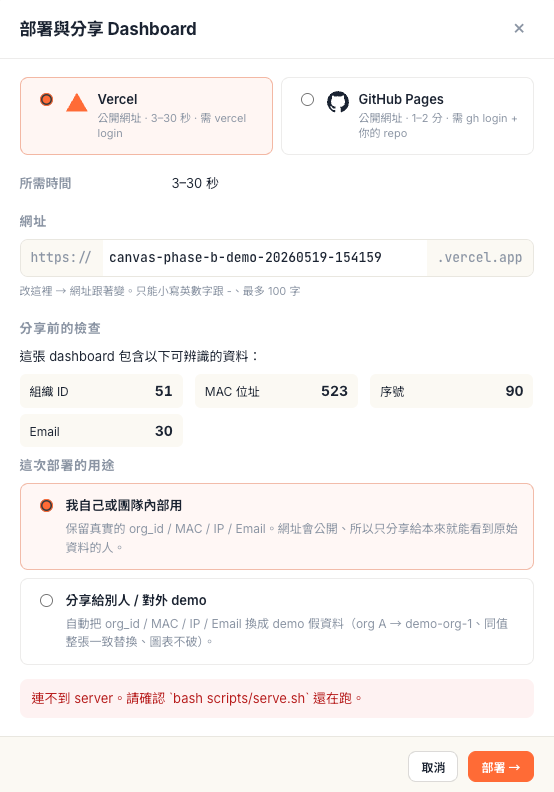

engenius-craft-ai、加了雙 agent（Claude Code + Codex）/ 本機目錄頁 / 品質閘… 最新進展見 → Skill v3 開發紀錄。Network AI-Assistant Skill v2
— 從 PoC 到可分享的網管助理
Skill v1 把 AI dashboard PoC 做出來、但只能在本機跑、Refresh 是假的、沒辦法切帳號試 — 3 天 25 個 PR、補齊「可被別人用 / 看 / 信任」的最後一哩。
為什麼要做這件事
Skill v1 出來後馬上撞到三個問題。
1. Demo 只能對著我自己的 Mac 開。 要給 Senao RD / 同事看「AI 怎麼即時組裝 dashboard」、得每次本機 bash scripts/serve.sh + 拉人來看我螢幕。沒辦法產一個 URL 丟到群組。
2. Refresh button 是假的。 按下去只是重讀同一份 JSON 檔。「AI 同事」這個名字、不能配 staging 一動就要等我手動重跑 recipe 的設計。
3. 沒辦法切帳號試。 所有 demo 都綁同一把 staging API key（RD 給的）、想對外講「這套通用、不只 Ian 的帳號能用」沒辦法現場驗證。
這三件事都不是「再加一個 feature」、是「把工具從 PoC 升級成可分享的產品」。我想看的不只是「dashboard 能被組」、是「整套 demo 流程跑得起來」。
技術選型
| 工具 / 技術 | 選的理由 |
|---|---|
Python http.server 子類 | 不裝 Flask、FastAPI、任何 framework。Python 標準庫就夠寫 7 個 endpoint。下游 RD / SI 接手不用搞 dependency。 |
| Vercel CLI | Vercel auto-creates project on first deploy（--yes flag），不用 user 先去 dashboard 開。寫一行 subprocess 解決。 |
gh CLI（GitHub Pages target） | 不寫 Octokit / GitHub REST API、全部走 gh repo list / git push origin gh-pages / gh api repos/.../pages。一樣是「沒額外 dep」。 |
| Pure SVG (inline) | Vercel triangle + GitHub Octocat 都直接寫進 HTML、用 currentColor、跟 theme 連動。不外掛 image hosting。 |
color-mix() in CSS | 軟色票 / soft tint 不寫 hex、跟著 design system token 走。深色模式自動 fallback。 |
| i18n via JS dict | DEPLOY_I18N 跟 SETTINGS_I18N 在 runtime.js 內、依 spec.locale 挑。沒做 react-intl / lingui 之類的 framework call。 |
pip install 一堆東西會卡死接手者。外部服務與金鑰
| 服務 / 工具 | 用途 | 類型 | 備註 |
|---|---|---|---|
| EnGenius Cloud Staging API | dashboard 真實資料來源 | REST API | falcon.staging.engenius.ai |
API_KEY env var | Staging API 認證 | API Key | 預設值 hardcode 在 3 個檔（serve.py / org.sh / refresh-all.sh）· OSS release 前要拔掉 |
vercel CLI | 一鍵 Vercel deploy | OAuth Token | 一次性瀏覽器登入 |
gh CLI | GitHub Pages deploy · 列 user repo | OAuth Token | 一次性瀏覽器登入 |
| terrelyeh/egcloud-llm-dashboards | GH Pages canvas snapshots | Public repo | 專用 repo、gh-pages branch 自動 orphan + push |
| Claude (Sonnet) | AI 協作 IDE | LLM | Claude Code |
系統架構
整個系統長這樣：
你的 Mac:
─────────────────────────────────────
│ Claude Code session（compose canvas）│
│ ↓ 寫檔 │
│ dashboard-builder/canvases/<id>/ │
│ ├── index.html（含 inline runtime.js）│
│ └── live-data/*.json │
│ ↑ │
│ │ 讀 │
│ scripts/serve.py（port 8765） │
│ ├── GET 靜態檔 │
│ ├── POST /refresh ←→ 跑 recipe │
│ ├── POST /deploy ←→ Vercel / GH │
│ ├── POST /settings/api-key ← 切帳號 │
│ ├── GET /account ← user 身分 │
│ ├── GET /user-orgs ← 解析 scope 名 │
│ └── GET /gh/repos ← repo dropdown │
│ ↑ │
│ │ HTTP │
│ 瀏覽器 Chrome（看 dashboard） │
│ ├── Refresh button → POST /refresh │
│ ├── Deploy button → POST /deploy │
│ ├── ⚙ Settings → POST /settings/... │
│ └── header chips: 👤 email · 🎯 scope │
│ 對外
▼
┌─────────────────────────────────────┐
│ EnGenius Cloud Staging API │
│ (recipe via api-skills Python venv) │
└─────────────────────────────────────┘
│ deploy
▼
┌─────────────────┐ ┌──────────────────┐
│ Vercel cloud │ │ GitHub Pages │
│ *.vercel.app │ │ <user>.github.io │
└─────────────────┘ └──────────────────┘Self-contained canvas：每張 dashboard = 一個 folder（index.html + live-data/）。Inline 所有 JS / CSS / 圖、不外連任何 stylesheet。Folder 可以整包打包丟去任何 static host。
_snapshot.json marker：deploy 出去的版本根目錄會有這個檔、runtime 偵測到後自動切 snapshot 模式（隱藏 Refresh/Deploy/Settings、停 polling、Live tag 變「Snapshot · YYYY-MM-DD」）。本機 source canvas 沒有 marker → 維持 live 模式。
In-process API key override：/settings/api-key 寫進 _api_key_override 全域變數、不寫磁碟。Server 重啟自動回到 env 預設。Demo 時切完現場、收場前重啟一下就乾淨。
推進方式
整個 v2 era 大概 25 個 PR（#41–#59）、按主題分成五波。
把 v1 那個「flat HTML 檔 + 共用 live-data」的結構改成 folder-per-canvas + refresh recipe。每張 canvas 一個獨立 folder = 為了之後一鍵部署做的鋪路。然後 ship 第一版 Vercel deploy（單一 target、redact / acknowledge checkbox、modal 字串全英文）。
真實 demo 給自己看一輪、找出 8 個小坑：
- Acknowledge → Deploy button 不會 enable（時序錯）
- Donut chart layout 三次調整（先太大、再太小、最後 anchor 左側 + designed legend）
- Recipe 截掉資料：Danny org 90 devices 只撈到 10、原因是 API server 每頁 cap 在 56 而我們沒做 pagination
- AI compose 把衍生欄位 bake 進 live-data JSON、結果 refresh 全洗掉
每個坑都 fix + 把學到的寫成 SKILL.md 規則（Mental model 必須寫散文不寫表格、live-data 是 API 真相不存衍生欄位）。
Refresh button 點下去用戶看不到在做什麼。加了 status banner：藍色「refreshing · 12s」即時計秒、綠色「✓ refreshed · 4 files · 28s」自動淡出、紅色「✗ failed」要點 ✕ 關。Recipe 在 server 跑時 client 知道：在做什麼 + 多久了 + 成功還失敗。
Header 加 account chip + scope chip — 多開幾張 dashboard 不會混。然後是 Settings modal — demo 時可以現場貼自己 key 切帳號、masked password + 👁 reveal、Save 前先打 /account 驗證 key 有效。
GitHub Pages 加進來。同個 modal 上面加 target chooser radio、Vercel / GH Pages 切換、下面欄位動態換（Vercel 顯示 project name input、GH Pages 顯示 repo dropdown + path slug）。/gh/repos endpoint 列出 user 53 個 repo 進 datalist 讓他挑。實機驗證撞到一個 Jekyll filter 把 _snapshot.json 過濾掉、加一行 .nojekyll 解決。
踩到的坑，讓我更懂的事
每一個坑都讓我對「AI 協作要怎麼做」更清楚一點。
解法：整個 v0.1 撤回、回到 v0 散文式描述 + 加 falsifiability test。後來把它寫進 design framework：「Mental models 要寫散文、不寫表格。Catalog 觸發 LLM 進 lookup mode、Principle 才會被內化。」
days_remaining / urgency_bucket 等衍生欄位算好寫進 live-data/inventory.json。看起來合理。直到 user 按 Refresh → recipe 重抓 API → 覆寫 inventory.json → 衍生欄位全沒了 → table filter / chip / 桶分布全爛。解法：修法不只是改 recipe，而是寫進 SKILL.md：「live-data/*.json 是 API 真相的鏡像、refresh 一定會整個覆寫。任何衍生欄位走 spec.compute_fns、在 render 時算、不要 bake 進 JSON。」加 falsifiability test：「如果 user 現在按 Refresh、這個欄位的值會被洗掉嗎？會 → 它就不該在 JSON。」
挖 code 看：ticker callback 每秒呼叫 setStatus('pending', '...12s') 更新文字、但 setStatus() 第一行是 clearInterval(statusTicker)。意思是：第一次 tick 觸發 → 呼叫 setStatus → setStatus 立刻把產生這個 tick 的 timer 殺掉 → 不會再有第二個 tick。
解法：ticker callback 不走 setStatus、直接動 DOM。setStatus 是給 state transition 用的（pending → success / error）、ticker 是 pending 內部更新、不該共用同一個進入點。
_snapshot.json 吃掉
_snapshot.json 確實有 push 上去（gh api 看 branch 內容存在）。但 curl <pages-url>/_snapshot.json 回 404。原因：GitHub Pages 預設用 Jekyll 處理檔案、Jekyll 預設會跳過所有 _ 開頭的檔案 / 資料夾。包含 _snapshot.json。
解法：repo root 寫一個空檔 .nojekyll。一行解決。
abc-def。打到 abc- 的時候、欄位裡的 - 立刻消失。試了好幾次才看出來。原因：oninput 即時 sanitize 把頭尾的 dash 都修掉了、所以 trailing - 一加就被吃。
解法：sanitize 拆成兩階段、即時只 normalize（清非法字、收 -- 成 -）、頭尾 trim 只在按 Deploy 那一刻才做。
最終樣貌

整套系統現在做得到的事：
- AI 在 Claude Code 對話內動態組裝 dashboard — 跟 AI 講「我要看 Danny org 的健康狀況」、它寫 spec.json、compose.py 組出 self-contained HTML + JSON folder、AI 自動
open瀏覽器 - 點 ↻ Refresh 拿即時資料 — server 跑對應 recipe（org / all / hv / network）、用 paginated_api 把 staging API 大量資料分頁拼接、寫回 canvas-local live-data → 瀏覽器自動 re-render
- header 兩個 chip 顯示 demo 身份 —
👤 ian.lai@senao.com/🎯 SCOPE Danny、多 dashboard 一目了然 - 點 ↗ Deploy 一鍵分享 — modal 選 target（Vercel 3-30s / GH Pages 1-2min）、改網址、選用途（保留真資料 / 給陌生人 demo 自動 redact）、~分鐘內拿到公開 URL
- 點 ⚙ Settings 現場切帳號 — 貼自己 key、masked input + 👁 reveal、Save 前先驗證、chip 即時變、Refresh 換用新 key 撈資料
- Deploy 出去的版本進 snapshot 模式 — 自動隱藏 Refresh/Deploy/Settings 按鈕、停 polling、Live tag 變「Snapshot · YYYY-MM-DD」、chip 從
_snapshot.jsonbaked 過的 identity 還原

https://terrelyeh.github.io/egcloud-llm-dashboards/demo-20260519-154159/
如果繼續往下
- deploy CLI wrapper（P2） — 把
deploy_lib.py包成scripts/deploy.sh命令列工具、power user / 批次自動化用。Modal 是 UI、CLI 是腳本化、兩條路同一個 deploy_lib 底層。 - Vercel Live mode（P4 · 風險高） — deployed canvas 也能 refresh、需要 serverless function 跑 recipe + 處理 API key auth gate。是不是真的需要、看 demo 後反饋。
- OSS release — 拔掉 hardcoded staging API_KEY fallback、改成
.envflow、寫 Windows / WSL 安裝指南、想清楚 RD vs PM 各自看到什麼 README 版本。 - 下個應用層 — 系統現在能組能 deploy、但 dashboard 本身的「決策力」還是 v1 那套。house-rules（EnGenius 平台事實）、playbook（standard procedure）、memory（看過的 dashboard）還沒實作。
1. 這個案例展示了什麼
「快速迭代 PR 流」配上「即時瀏覽器驗證」做大型 AI 協作專案的可行性。25 個 PR / 3 天、每個 PR 一件小事、每個 PR 都驗證再 merge。AI 寫 code、我做 UX 判斷 + review + 報 bug。沒寫測試（因為都是 UI / IO 邊界、人眼比 unit test 還容易判對）、但因為每個 PR 都小、瀏覽器點一下就知道對不對。
2. 可移植性
✅ 適用的情境：
- Vibe coding 類型的小工具 / 內部 demo / PoC
- 工程師背景輕、但需要快速 ship UI 的人
- 願意每個 PR 都驗一次的紀律
- 主要在 web 環境、能即時用瀏覽器看效果
❌ 不適用的情境：
- 需要 production-grade test coverage 的系統
- 多人協作、conflict 跑很頻繁的 codebase
- 後端 service / 一次部署要花 30 分鐘以上的場景
3. 起手式 prompt
如果你也要做、可以先問 AI 兩個 prompt：
我要做一個 [系統]、user flow 是 [a → b → c]、
幫我列出最小可動原型需要的 endpoints + UI components + data flow，
不要寫 code、只要結構圖。進到中期、選技術路徑時：
[功能 X] 有 3-4 種實作路徑、各自的 tradeoff 是什麼？
工程量？依賴？
我是 [背景] 你建議走哪條？第一題讓 AI 把問題拆好、第二題讓你不只拿到 1 個解、而是看到地圖再選。